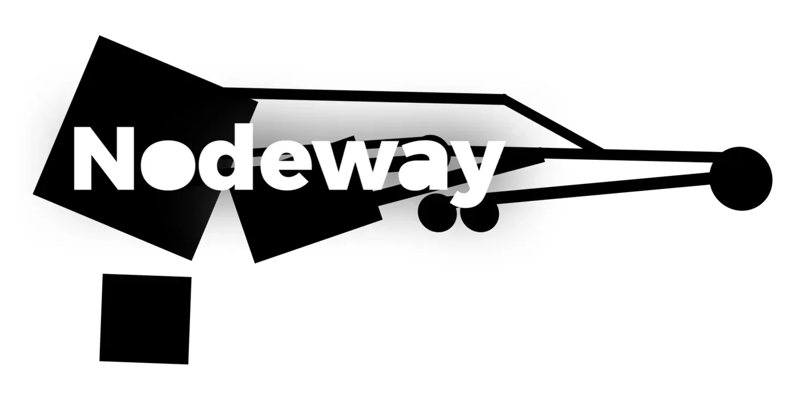

- Role
- Creative production generalist
- Rozsah
- Motion, deck, tutorial
- Důkaz
- Reálné soubory a varianty
Situace
Produktová komunikace potřebovala několik typů výstupů a opakované varianty. Hodnota proto neležela v jednom efektním kusu, ale v konzistentní produkční kapacitě.
Moje role
Vytvářel jsem motion výstupy, prodejní a prezentační materiály, produktové tutoriály, lokalizované exporty a editovatelné projekty určené k dalšímu použití.
Výstupy
- Produktové a brandové animace.
- Sales deck a prezentační systémy.
- Tutoriály a produktová vysvětlení.
- Jazykové a formátové varianty.

Co to dokazuje
Produkční disciplínu, práci s variantami a schopnost připravit výstup tak, aby ho tým mohl skutečně použít a předat dál.
Podobný problém
Potřebujete spolehlivou produkční kapacitu přes několik formátů, ale nechcete pokaždé znovu vysvětlovat celý kontext?